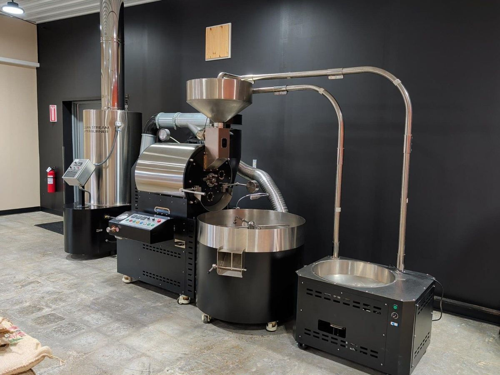
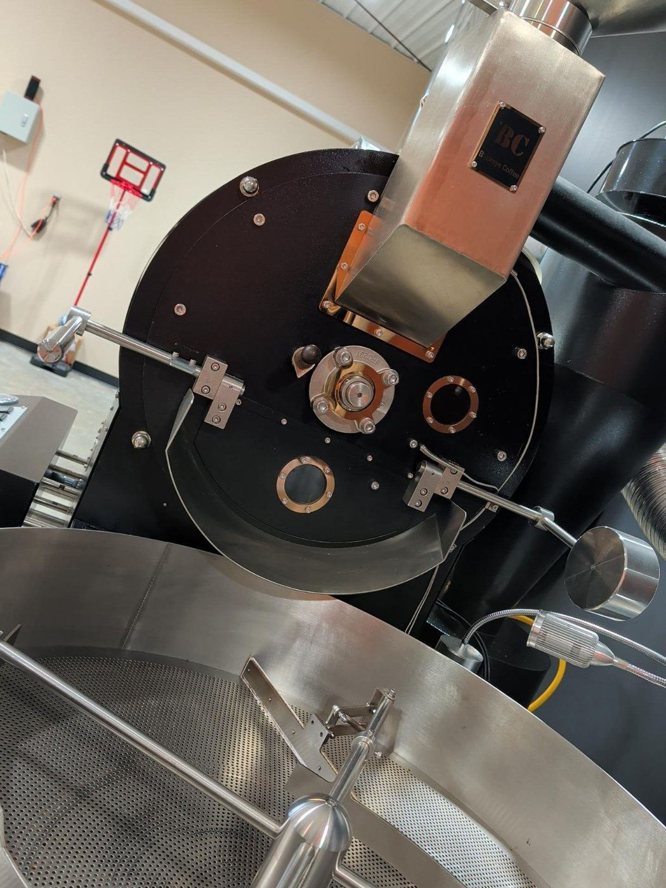
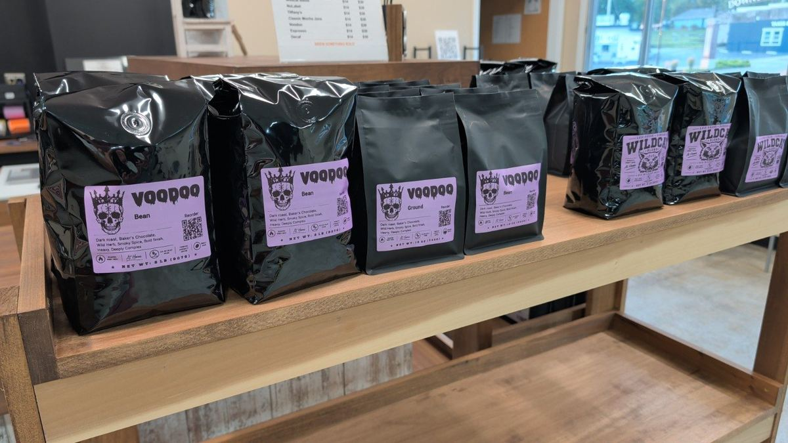
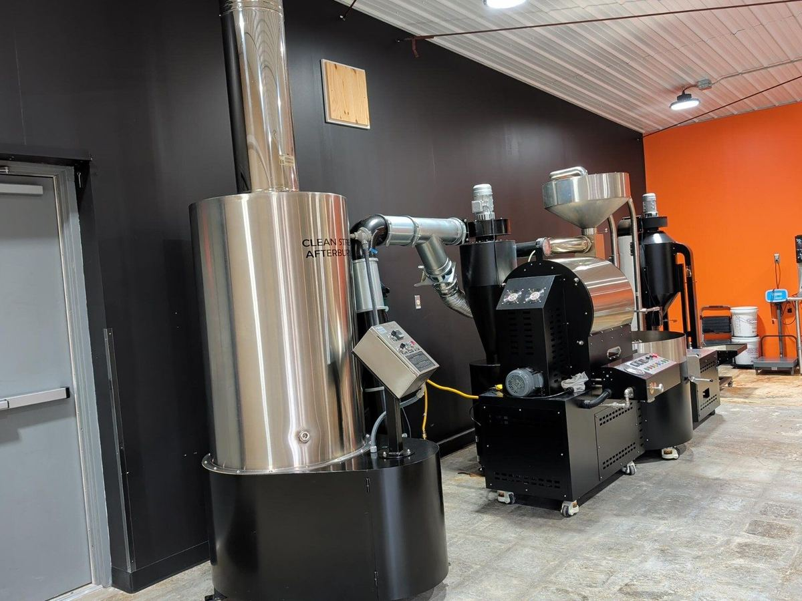

Coffee roasted right here at home.
Brew & Brews is a small-batch coffee roastery built around one simple idea: coffee should be fresh, approachable, and worth looking forward to every morning.
We roast coffee. We don’t just put our name on a bag.
Every Brew & Brews coffee starts with green coffee selected for the flavor, body and roast style we want in the cup. Then the real work begins here in Louisburg.
We roast in small batches, build profiles around each coffee, and make adjustments based on how the coffee actually develops—not because a chart says every coffee should be treated the same.
The goal is straightforward: make fresh coffee that tastes great without making coffee complicated.

The personality shows up in the roasting.
Light and bright, smooth and balanced, bold and dark—each profile is built for what we want that coffee to become.
Freshness matters. So does consistency. We roast, cool, rest and package the coffee here before it heads out to the people who brew it.
Real coffee. Packed fresh. Ready to brew.
From everyday favorites to coffees with a strong local identity like Wildcat Blend, our bags represent the same work happening behind the roaster every week.


Louisburg isn’t just where we roast. It’s home.
We built Brew & Brews around local roasting, strong relationships and coffee people can enjoy every day. That means serving individual customers, businesses, wholesale partners and local retail shelves with coffee roasted right here.
Our hometown is part of the brand because it’s part of the work.
From green coffee to the bag in your hand.
A simple process, repeated carefully.
Source
Choose green coffees for flavor, body, sweetness and the roast style we’re after.
Roast
Develop each batch around the profile that brings out the character we want.
Rest + Pack
Cool, rest and package it as whole bean or ground while it’s fresh.
Brew
Send it to homes, businesses and retail shelves for the part that matters most.
Fresh coffee. Roasted local. Built to be brewed.
Whether you’re finding us for the first time or you’ve been brewing Brew & Brews for years, we’re glad you’re here.